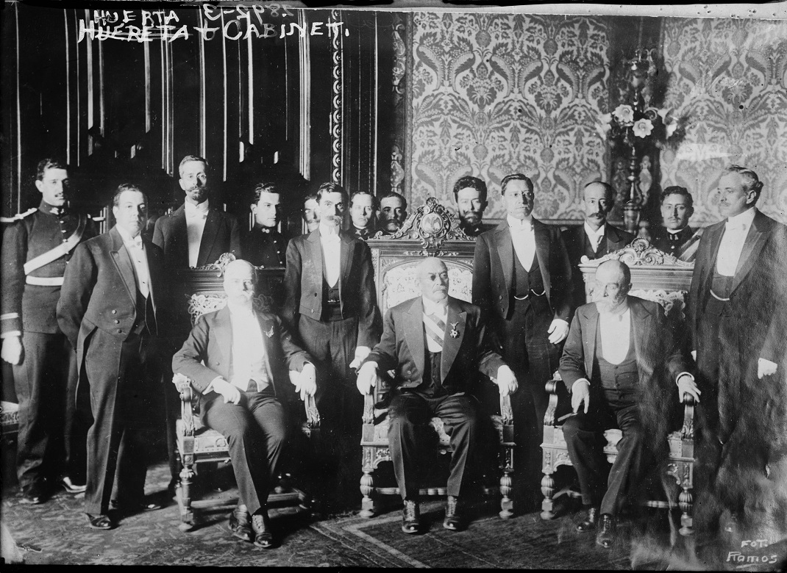

Email: contacto@familiahuerta.mx
Tel: (555) 000-1234
Dirección: Avenida del Poder 1910, CDMX
Los esmaltes simbolizan: ORO: Nobleza, Magnanimidad, Riqueza, Poder, Luz, Constancia y Sabiduría. GULES: Fortaleza, Victoria, Osadía, Alteza y Ardid. SINOPLE: Esperanza, Fe, Amistad, Servicio y Respeto. La Torre representa la Generosidad con que el Caballero se ofrece al servicio de su Patria y de su Rey. El Árbol es símbolo de Antigua y Esclarecida Nobleza. El Lobo es símbolo de un Corazón Constante que sufre las calamidades de la guerra y del asedio con generoso espíritu; mas llegado el momento de la lucha a campo abierto, pelea ferozmente, sin dar cuartel a su enemigo.
